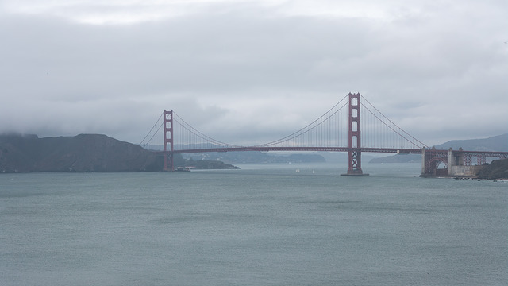
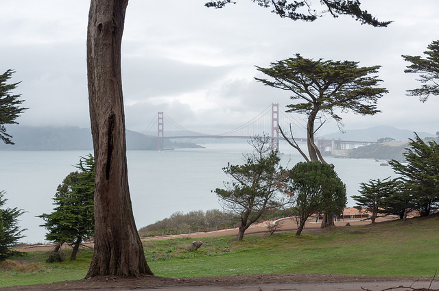
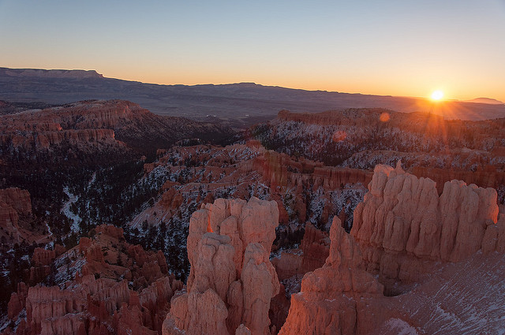
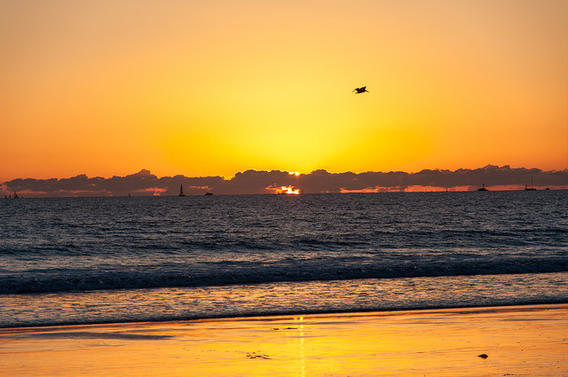
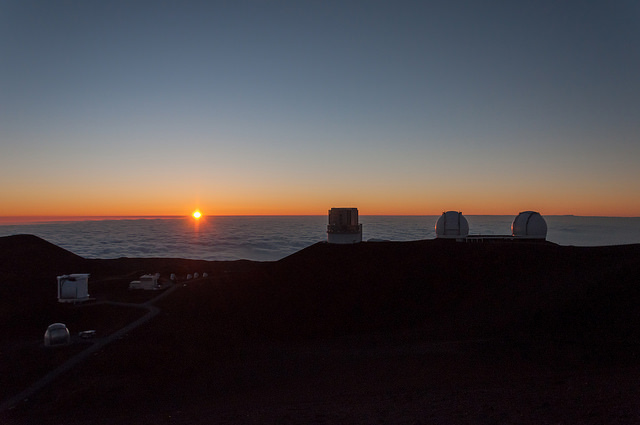
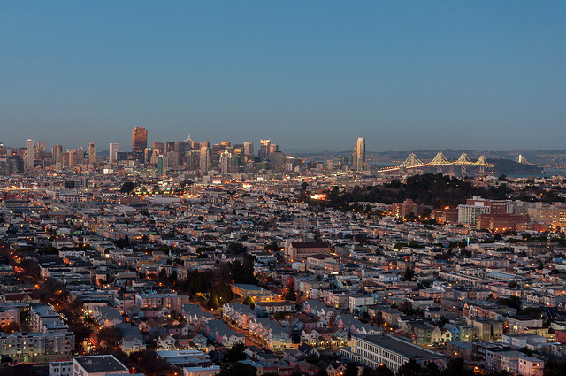

Take a lot of pictures
It is hard to predict what would a perfect moment for a photograph.
Professional photographers all do this. For action sports, events, studio photography, etc.
It you have lots of same scene shots, it would be easier to choose the right one.
Experiment with composition
Is the subject is more important that surroundings?
Does the subject always have to be in the middle of the frame?
You might find compositions based on golden ratio look more natural and drive viewer's attention towards a subject

Golden hour
Magic time of the day at sunrise and sunset offers the soft light and gives your photographs special mood.




Paint with light


Visit places!

Exposure
Try to expose to the right without clipping highlights. Shadows tend to have more noise.